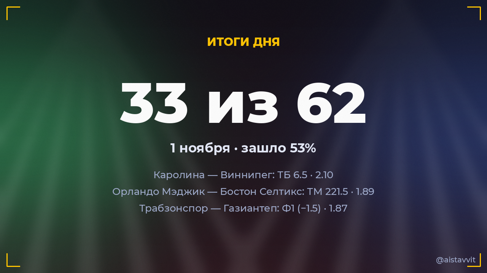

Итоги дня — 1 ноября 2026
Зашло 33 из 62 основных прогнозов (53%), ROI дня -11.0%. Каждый прогноз учтён — и заходы, и промахи.

Все прогнозы дня
⚽ Америка — Толука
X2 · 1.582:2 ✅
X2 · 1.582:2 ✅
⚽ Касымпаша — Бешикташ
ТБ 2.5 · 1.642:2 ✅
ТБ 2.5 · 1.642:2 ✅
⚽ Eintracht Frankfurt — Hamburg SV
П1 · 1.573:1 ✅
П1 · 1.573:1 ✅
⚽ Маритиму — Санта-Клара
ТМ 2.5 · 1.520:2 ✅
ТМ 2.5 · 1.520:2 ✅
⚽ Академику де Визеу — Риу Аве
ТБ 2.5 · 1.832:1 ✅
ТБ 2.5 · 1.832:1 ✅
⚽ Бока Хуниорс — Ривер Плейт
ТМ 2.5 · 1.581:0 ✅
ТМ 2.5 · 1.581:0 ✅
⚽ Шарлеруа — ФК «Ла-Лувьер»
ТБ 2.5 · 1.685:2 ✅
ТБ 2.5 · 1.685:2 ✅
🏒 Каролина — Виннипег
ТБ 6.5 · 2.107:0 ✅
ТБ 6.5 · 2.107:0 ✅
⚽ Атлетик — Реал Сосьедад
ТБ 2.5 · 1.652:1 ✅
ТБ 2.5 · 1.652:1 ✅
⚽ Брага — Фамаликан
П1 · 1.773:0 ✅
П1 · 1.773:0 ✅
⚽ Ванкувер Уайткэпс — Сиэтл Саундерс
П1 · 1.585:1 ✅
П1 · 1.585:1 ✅
🏀 Орландо Мэджик — Бостон Селтикс
ТМ 221.5 · 1.8997:108 ✅
ТМ 221.5 · 1.8997:108 ✅
⚽ Нэшвилл — Нью-Йорк Ред Буллз
П1 и ТБ 1.5 · 1.653:2 ✅
П1 и ТБ 1.5 · 1.653:2 ✅
🎾 Татьяна Мария — Бьянка Андрееску
Победа: Бьянка Андрееску · 1.611:2 ✅
Победа: Бьянка Андрееску · 1.611:2 ✅
⚽ Сантос — Некакса
П1 · 1.801:0 ✅
П1 · 1.801:0 ✅
⚽ Крус Асуль — Леон
П1 · 1.632:1 ✅
П1 · 1.632:1 ✅
🏒 Анахайм — Оттава
ТБ 6.5 · 1.746:3 ✅
ТБ 6.5 · 1.746:3 ✅
🏀 Голден Стэйт — Клипперс
П1 (с ОТ) · 1.80124:112 ✅
П1 (с ОТ) · 1.80124:112 ✅
🏀 Лейкерс — Торонто Рэпторс
П1 (с ОТ) · 1.62131:125 ✅
П1 (с ОТ) · 1.62131:125 ✅
⚽ Париж — Монако
ТБ 2.5 · 1.763:1 ✅
ТБ 2.5 · 1.763:1 ✅
⚽ Портленд Тимберс — Хьюстон Динамо
П1 · 1.813:1 ✅
П1 · 1.813:1 ✅
⚽ Хетафе — Севилья
1X · 1.503:1 ✅
1X · 1.503:1 ✅
⚽ Серкль Брюгге — Антверпен
ТБ 2.5 · 1.542:1 ✅
ТБ 2.5 · 1.542:1 ✅
⚽ Истанбул Башакшехир — Самсунспор
ТБ 2.5 · 1.605:2 ✅
ТБ 2.5 · 1.605:2 ✅
⚽ Трабзонспор — Газиантеп
Ф1 (−1.5) · 1.872:0 ✅
Ф1 (−1.5) · 1.872:0 ✅
⚽ Telstar — Утрехт
ТБ 2.5 · 1.504:2 ✅
ТБ 2.5 · 1.504:2 ✅
🎾 Алекс де Минор — Карлос Алькарас
Будет 2 сета · 1.780:2 ✅
Будет 2 сета · 1.780:2 ✅
⚽ Эксельсиор — Твенте
П2 · 1.560:9 ✅
П2 · 1.560:9 ✅
⚽ Лацио — Кальяри
ТБ 2.5 · 1.782:1 ✅
ТБ 2.5 · 1.782:1 ✅
⚽ Страсбур — Осер
ТБ 2.5 · 1.555:1 ✅
ТБ 2.5 · 1.555:1 ✅
🎾 Нома Ноа Акугуэ — Алина Чараева
Победа: Алина Чараева · 1.530:2 ✅
Победа: Алина Чараева · 1.530:2 ✅
⚽ Сент-Трюйден — Ауд-Хеверле Лёвен
ТБ 2.5 · 1.561:2 ✅
ТБ 2.5 · 1.561:2 ✅
⚽ Амедспор — Эюпспор
ТБ 2.5 · 1.585:1 ✅
ТБ 2.5 · 1.585:1 ✅
🏒 Рейнджерс — Эдмонтон
ТБ 6.5 · 1.851:4 ❌
ТБ 6.5 · 1.851:4 ❌
⚽ Ланус — Gimnasia (Mendoza)
П1 · 1.561:1 ❌
П1 · 1.561:1 ❌
⚽ Belgrano (Córdoba) — Барракас Сентраль
П1 · 1.802:2 ❌
П1 · 1.802:2 ❌
⚽ Нью-Инглэнд Революшн — Интер Майами
1X · 1.601:2 ❌
1X · 1.601:2 ❌
⚽ Комо — Венеция
Ф1 (−1.5) · 1.741:0 ❌
Ф1 (−1.5) · 1.741:0 ❌
🏀 Индиана Пэйсерс — Бруклин Нетс
П1 (с ОТ) · 1.5990:98 ❌
П1 (с ОТ) · 1.5990:98 ❌
⚽ Лос-Анджелес — Миннесота Юнайтед
П1 · 1.611:3 ❌
П1 · 1.611:3 ❌
⚽ Зволле — АДО Ден Хааг
ТБ 2.5 · 1.581:0 ❌
ТБ 2.5 · 1.581:0 ❌
⚽ Фалкерк — Селтик
П2 и ТБ 1.5 · 1.612:0 ❌
П2 и ТБ 1.5 · 1.612:0 ❌
🏒 Филадельфия — Юта
ТМ 6.5 · 1.746:3 ❌
ТМ 6.5 · 1.746:3 ❌
🎾 Лилли Таггер — Хэрриет Дарт
Будет 2 сета · 1.861:2 ❌
Будет 2 сета · 1.861:2 ❌
⚽ Атланта Юнайтед Фк — Торонто
X2 · 1.653:1 ❌
X2 · 1.653:1 ❌
⚽ Расинг Сантандер — Реал Мадрид
ТБ 3.5 · 1.540:3 ❌
ТБ 3.5 · 1.540:3 ❌
⚽ Ньюэллс Олд Бойз — Unión (Santa Fe)
П1 · 1.931:1 ❌
П1 · 1.931:1 ❌
🏒 Вашингтон — Миннесота
ТБ 6.5 · 2.051:5 ❌
ТБ 6.5 · 2.051:5 ❌
⚽ Арока — Насьонал
ТБ 2.5 · 1.801:0 ❌
ТБ 2.5 · 1.801:0 ❌
⚽ Олимпик — Тулуза
ТБ 2.5 · 1.522:0 ❌
ТБ 2.5 · 1.522:0 ❌
⚽ Ювентус — Наполи
ТБ 2.5 · 1.952:0 ❌
ТБ 2.5 · 1.952:0 ❌
⚽ Фрозиноне — Торино
X2 · 1.662:0 ❌
X2 · 1.662:0 ❌
⚽ Эльче — Валенсия
ТБ 2.5 · 1.910:1 ❌
ТБ 2.5 · 1.910:1 ❌
🎾 Лейла Фернандес — Диана Шнайдер
Будет 2 сета · 1.861:2 ❌
Будет 2 сета · 1.861:2 ❌
⚽ Лечче — Дженоа
ТМ 2.5 · 1.561:2 ❌
ТМ 2.5 · 1.561:2 ❌
⚽ Унион Берлин — Кёльн
ТБ 2.5 · 1.611:1 ❌
ТБ 2.5 · 1.611:1 ❌
⚽ Ливерпуль — Арсенал
ТБ 2.5 · 1.820:1 ❌
ТБ 2.5 · 1.820:1 ❌
🎾 Иржи Леxечка — Валантен Вашро
Победа: Иржи Леxечка · 1.621:2 ❌
Победа: Иржи Леxечка · 1.621:2 ❌
⚽ Олимпик — Анже
ТБ 2.5 · 1.532:0 ❌
ТБ 2.5 · 1.532:0 ❌
⚽ Гронинген — Спарта Роттердам
П1 · 1.742:3 ❌
П1 · 1.742:3 ❌
🎾 Алис Тюбелло — Юлия Грабер
Победа: Юлия Грабер · 1.512:1 ❌
Победа: Юлия Грабер · 1.512:1 ❌
⚽ Ломмел — Гент
ТБ 2.5 · 1.772:0 ❌
ТБ 2.5 · 1.772:0 ❌
← предыдущий день · следующий день → · статистика бота · прогнозы на сегодня · Telegram-канал